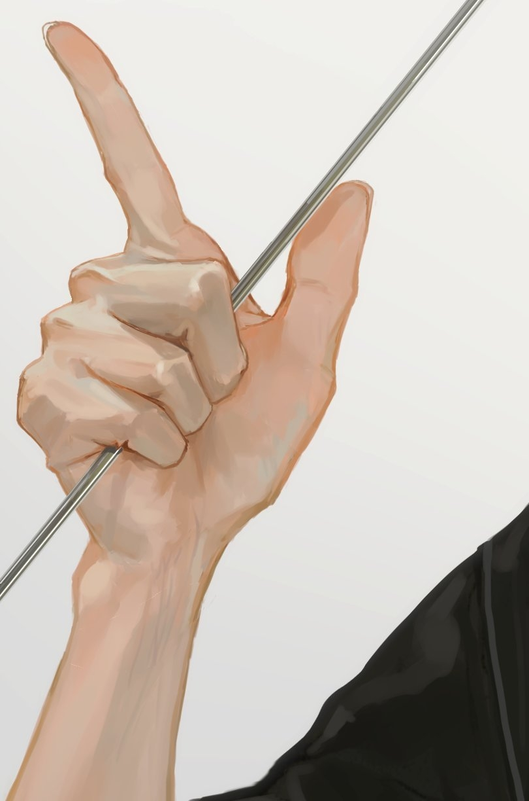

5月5日
致王姚尹:
OMG ！！！！我现在才想起来还没有写信！！！现在22点40分了！！！！
我的天！！！崩溃，浅听我狡辩（不是），我今天画画就很有手感，就一直画画，然后我又不是大佬，肯定有不足的地方，我画完以后，
我就发现头发怎么画都不怎么好看，然后我就什么b站，半次元，花瓣搜索怎么画头发，当然期间也有看其他的视频，然后就很沉迷啊，就很好看，
期间又因为在半次元看到手的画法，就特别！特别想画！我手控晚癌嘛，然后我今天画速写的时候，发现那种角度特别刁钻的我都能够画出来，我自信心大膨！
也有可能是两眼一眯，就觉得是很好看的。不管，我就觉得我能信，就像锻炼一下画手的能力。给你看一下我想画的效果

这也太太好看了吧，呜呜呜呜，我真的真的好喜欢好喜欢好喜欢的。但是我不会我就想锻炼一下，
万一会捏，然后我就去找手的教程！但是怎么都找不到我之前特别喜欢的教程了，我不死心就一直找，就找到给你写信的前一秒（微笑）。我死心了。
吐槽一下我们数据挖掘的老师，虽然是我的错，但是我还是要吐槽，他就跟防贼一样防着我！！！
就是之前有一次实验课，我坐在最后面，玩开心消消乐，很好玩，很沉迷，然后就被抓了，老师没说什么，就是提醒我一下。这事我就以为翻篇了。
下节课，他实验课，不让我们做实验，他就上课，就十几分钟吧，然后课上完，他就说，不要上课玩手机，被我看到就平时分直接扣一半。我心知肚明的是在说我，
我死性不改，他上课时我还在挂机打游戏（这次我做坐最前面），他说完，我看到他过来我这边，我就把手机翻面。这事也过去了，我知道他盯上我了，
我心里暗想，老娘绝对不会让自己平时分减半的。今天上实验课，我还是坐在最前面的位子，他两节课过来我这边两次，看了我两次（叉腰）(｢･ω･)｢嘿，
没想到吧，我今天打代码，没有玩手机，绝对不会有机会让你抓到的(╭☞•́⍛•̀)╭☞，0.1的几率都不会给。
我们宿舍关灯了，我就不写啦，我也要睡了，明天星期六但是要补课，早课。拜拜六。明天见！！！
5.5
陈佩芝